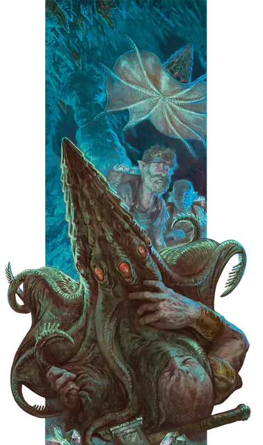

Тёмная мантия
Darkmantle
Маленькая Аберрация, без мировоззрения

Класс Защиты 11 Инициатива +3 (13)
Хиты 22 (5к6 + 5)
Скорость 10 футов, Полёта 30 футов
| мод | спас | ||
|---|---|---|---|
| СИЛ | 16 | +3 | +3 |
| ЛОВ | 12 | +1 | +1 |
| ТЕЛ | 13 | +1 | +1 |
| мод | спас | ||
|---|---|---|---|
| ИНТ | 2 | −4 | −4 |
| МДР | 10 | +0 | +0 |
| ХАР | 5 | −3 | −3 |
Чувства пассивное Восприятие 10, Слепое зрение 60 футов
Языки нет
Опасность 1/2 (100 опыта; БВ +2)
Действия
Сдавливание. Бросок рукопашной атаки: +5, досягаемость 5 фт. Попадание: 6 (1к6 + 3) Дробящего урона, и тёмная мантия прикрепляется к цели. Если цель — существо Среднего размера или меньше, и тёмная мантия совершала эту атаку с Преимуществом, тёмная мантия облепляет голову цели; пока мантия облепляет её голову, цель получает состояние Ослеплённый и задыхается. Пока тёмная мантия прикреплена к цели, она может атаковать только эту цель, но совершает броски атаки с Преимуществом. Скорость тёмной мантии снижается до 0; она не может получать бонусы к Скорости и перемещается вместе с целью. Существо может действием совершить проверку Силы (Атлетика) Сл 13, чтобы в случае успеха открепить тёмную мантию от себя. Тёмная мантия может открепиться самостоятельно, потратив 5 футов перемещения.
Аура тьмы (1/день). Магическая Темнота заполняет 15-футовую Эманацию, исходящую от тёмной мантии. Этот эффект длится до тех пор, пока тёмная мантия концентрируется на нём (вплоть до 10 минут). Тёмное зрение не может видеть сквозь эту тьму, и никакой свет не может осветить эту область.
Бонус мастерства +2
Среда обитания Подземье
Сокровища Отсутствуют